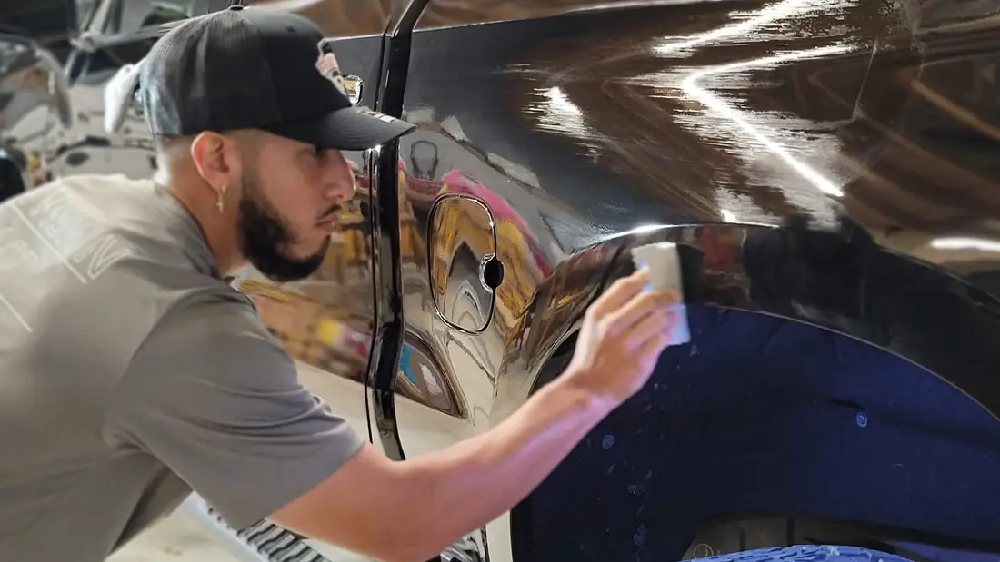

Interior Detailing
Seats, carpets, panels and cargo areas cleaned top to bottom. Google reviewers mention stains, smoke smell, pet hair and sand that came out.
Get a quoteInterior, exterior, paint correction and ceramic coatings, done at your home or work by Franco’s Auto Detailing.
5.0· 64 Google reviewsInterior, exterior, paint correction and ceramic coatings, plus wheels, tint and special vehicles. Prices depend on the vehicle, so every job starts with a free quote.
Seats, carpets, panels and cargo areas cleaned top to bottom. Google reviewers mention stains, smoke smell, pet hair and sand that came out.
Get a quoteA careful hand wash and exterior detail, wheels and tires included. Franco works on trucks, SUVs, cars and even wrapped paint.
Get a quotePolishing to remove swirls, scratches and stuck-on contamination. One reviewer's brand-new truck had baked-on wax that came right off.
Get a quoteCeramic coating and protective coatings for lasting gloss. Ask Franco which protection fits your vehicle and budget.
Get a quoteWheels cleaned and brought back to life, tires dressed. One customer says it saved them from buying new wheels.
Get a quoteA Google reviewer had their windows tinted by Franco for the Texas heat. Ask about tint for your vehicle.
Get a quoteFrom lifted trucks to a 1957 Bel Air and even an 18-wheeler interior. If it has wheels, ask.
Get a quoteTell Franco about your vehicle and the problem. He'll point you to the right service and give you a quote.
Ask for a quote
At work · Franco’sPhotos from Franco’s Auto Detailing’s Google listing and social pages. Before/after photos are labeled by the shop itself.
64 Google reviews
Average rating as shown on Google, November 2026.
“I had some car wash based wax baked onto my brand new 2024 truck from a mishap while cleaning, no matter what I tried to do it wouldn’t come off and i just got the truck delivered from factory 2 weeks ago. Franco‘s auto detailing, came in and was able to do a paint enhancement polishing job that took it right off, he also did a hand wash, interior and exterior detail, as well as a five-year protective coating, he worked almost 9 hrs non stop and the truck came out looking better than it did from the factory. I will most definitely 100% be using his services again in the future.”
“Professional detail job. First time seeing a rinse-less wash. Franco was courteous, friendly, and paid great attention to detail. Drove in from Houston and my Ram TRX was covered in dirt and bugs. The pictures speak for themselves. Crystal clean! Support this small business owner. Rivals the top detail shops in Houston.”
“Highly Recommend!! I have a satin wrap on my Ford Raptor and it was handled with great care and professionally washed! They will travel distance as well. I won’t use anyone else!”
“He came out and detailed my 1957 Chevy Bel Air. He did awesome job. Communication on point and great service.”
“Franco’s Auto Detailing brought my car back to life. It looks brand new again! The best part is he is mobile and can come to you! I reached out and the response time is quick and was able to get booked in a timely manner. Very professional, great customer service and quality work. I will definitely be using him again!”
“We had a full detail done with Franco for my 2022 Toyota Highlander and his work exceeded mine and my husband’s expectations. His dedication to detail was very noticeable as every inch of our daily vehicle was cleaned to a brand new slate! We are highly satisfied and will be returning.”
“Saved me a bunch of money cause I was looking to buy new wheels but he was able to bring my old wheels back to life, also did amazing wash and interior cleaning.”
“Highly Recommended! If you’re looking for a business that is thorough and for their customers then look no further! I needed my windows tinted for this Texas Heat and Franco had my vehicle cooler than ever.”
“I’ve been wanting to get my car detailed for the longest time. I’ve been traveling out of state and back for the last 3 years in my car, WITH my animals. You can imagine how stained in the inside can be. Franco did an AMAZING job detailing and getting every stain out. He was very professional and everything was done on time. He’s great! You won’t regret it.”
“Franco is the best! Great car service, excellent customer service, arrived early and was done when expected. Plus he’s mobile, which is convenient. Seriously the best car detailer in town!”
Selection of verbatim Google reviews, rating as shown on Google, November 2026. Drag or swipe to browse.
Mobile service across Robinson, Waco and surrounding Central Texas. A Google reviewer says Franco will travel distance too. Not on the list? Call to confirm your location.
Yes. Franco's is a mobile service: Instagram says "Mobile Service, Waco & Surrounding" and customers on Google mention that he comes to them. Call or text to confirm he can reach your location.
Robinson, Waco and surrounding Central Texas. One Google reviewer says he will travel distance as well, so if you're farther out just call or text and ask.
Prices depend on the vehicle, its condition and the service, so there are no fixed prices posted. Send a free quote request or call, and reviewers say Franco is up front about cost before the work starts.
Call or text +1 254-981-1297, email francosautodetailing@gmail.com, or use the quote form on this site. The form prepares a text message to Franco. Nothing is booked until he confirms with you.
Yes. Ceramic coatings and paint correction are both listed on the shop's Instagram, and reviewers describe polishing work and a five-year protective coating. Ask for a quote for your vehicle.
Reviews mention a lifted Raptor with a satin wrap, a Ram TRX, a 1957 Chevy Bel Air and an 18-wheeler interior. If you have something unusual, call and ask.
Call or text for a free quote. We come to you in Robinson, Waco and surrounding areas.